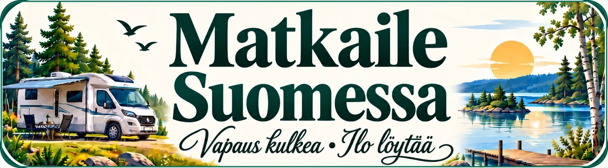

⌖ SavonlinnaHistoriallinen linna ja järvimaisemat
Vapaus kulkea · Ilo löytää
Parhaat paikat, pysähdykset ja elämykset
unohtumattomiin kotimaan matkoihin.
Nähtävyydet, luonto, taukopaikat, ruukkikylät sekä kahvilat ja ravintolat.
Et ole vielä lisännyt suosikkeja. Voit tallentaa kohteen painamalla sen sydäntä.

Löydä yöpymispaikat ja elämykset tien päällä.
Hae kuntaa, maakuntaa tai kohdetta.
Mitä kaikkea Matkaile Suomessa tarjoaa?
Nähtävyyksiä, paikallisia erikoisuuksia ja kiinnostavia vierailukohteita.
Leirintäalueita, matkaparkkeja ja karavaanarin palveluita.
Persoonallisia kahviloita, ruukkikyliä, luontokohteita ja erikoisia nähtävyyksiä.
Löydä kiinnostavia pysähdyspaikkoja reitin varrelta ja kerää omat matkamuistosi.
Suomi on täynnä upeita maisemia, kiehtovia kohteita ja uusia elämyksiä. Löydä omat suosikkisi ja nauti matkasta!